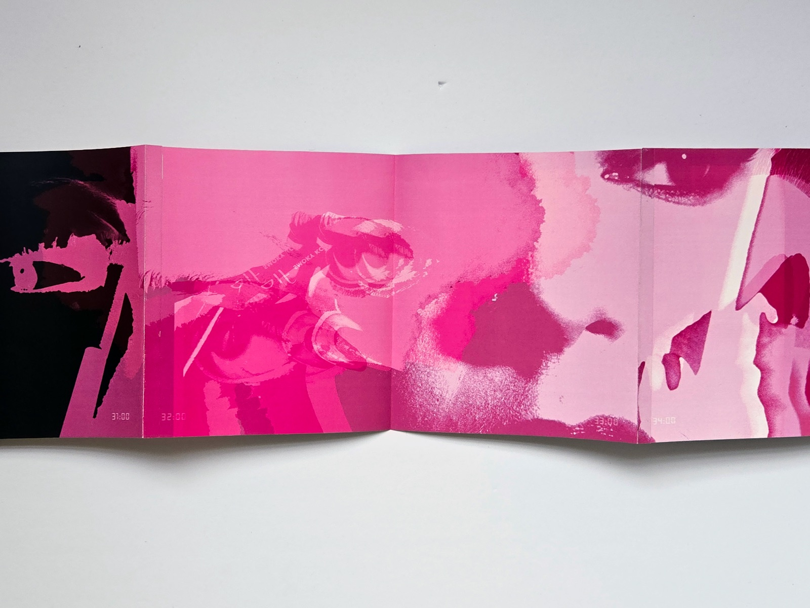
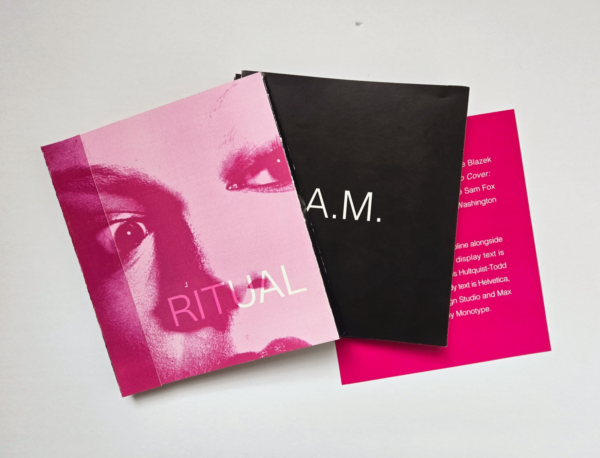
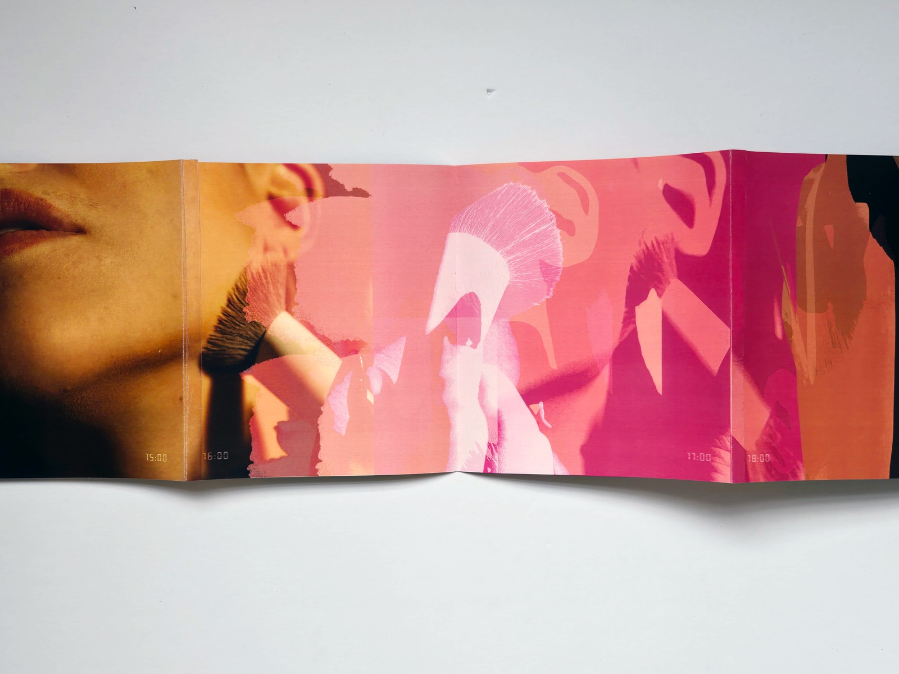
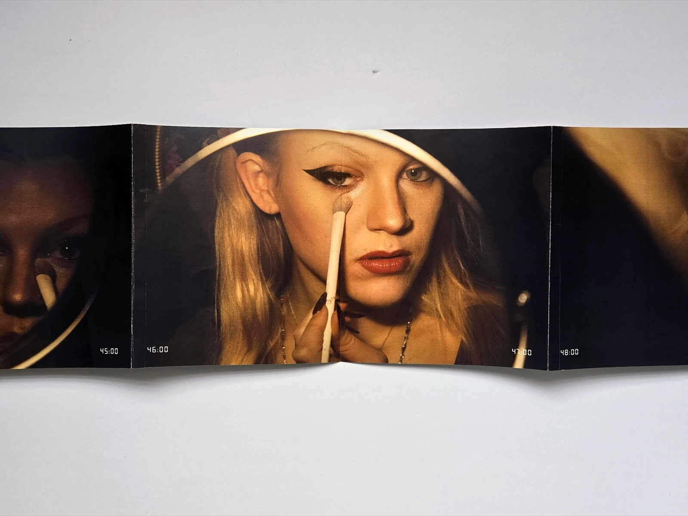
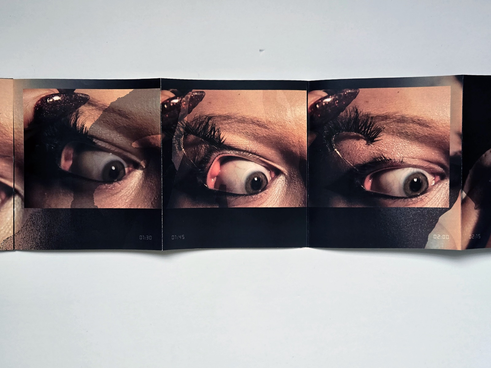
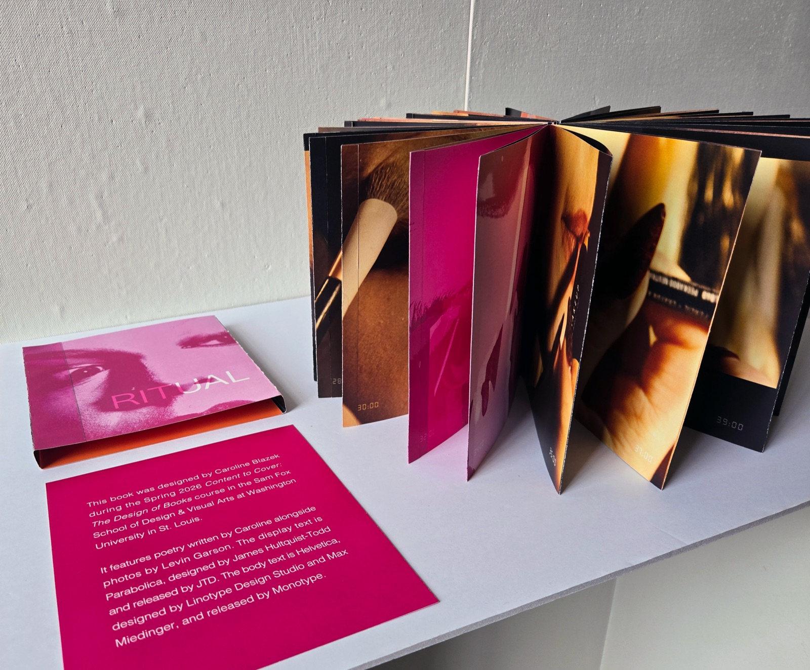

Ritual
- InDesign
- Photoshop
This book documents the meditative nature essential to the everyday practice of applying makeup in the morning, then taking it off in the evening, through close-up photographs by Levin Garson of my own face as I work through my routine.
The sequence begins with the moment I first sit down at my desk, illuminated by the bright light of my lamp. Photos move through each area of my face as I approach my routine in a segmented manner, attending to each feature with care.



Morning
Each segment is interrupted by moments of vivid abstract shapes, displaying my own periodic daydreaming and reflection. I view my morning routine as a sacred time to think through what has happened in the previous week, and prepare myself for the day ahead. The accordion form of the book allows one to spread these micro-moments over a longer view, reflecting the extension of time that occurs during the ebb and flow of routine and daydreaming.


Evening
The evening photography assumes a slightly different role, less saturated than the photos before. These moments are interrupted by tactile, dirty shapes that reflect the grimey process of taking off what I have worn throughout the long day. The sequence ends with personal writing reflecting on what I think about during this time, and how it prepares me to move forward.
